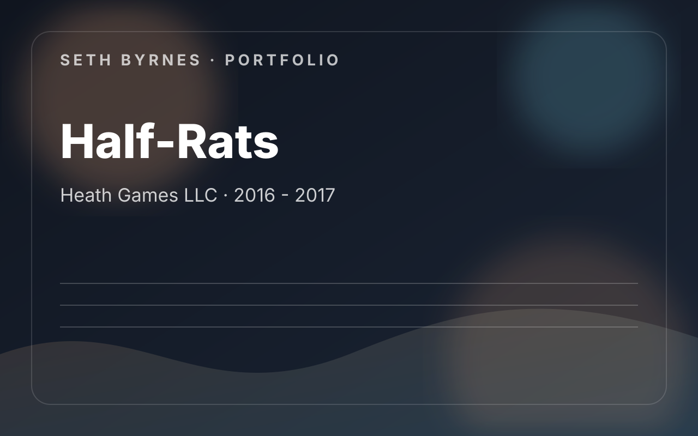

Heath Games LLC · 2016 - 2017
Half-Rats: Parasomnia
Thorough QA work on a horror total conversion for GoldSRC, with a strong emphasis on issue capture, level readability, pacing, and the player-experience side of testing.

Contribution Areas
- Playtested the full game and recorded full chapter playthrough videos.
- Captured screenshots, location data, reproduction steps, and circumstance notes for bugs.
- Reported balance issues, cosmetic issues, UI mistakes, and encounter-flow problems.
- Suggested gameplay and level-layout changes to improve clarity and feel.
What I Owned
- Issue reproduction and reporting
- User-experience testing
- Balance and readability notes
- Long-form chapter validation
What This Work Demonstrates
- Shows the quality bar and thoroughness behind my QA work.
- Strong example of testing as design support, not just defect logging.
- The accompanying recommendation letter specifically cites detail orientation and work ethic.
Project Summary
Chapter-by-chapter QA, bug reproduction, balance notes, and player-experience feedback on a Half-Life total conversion.